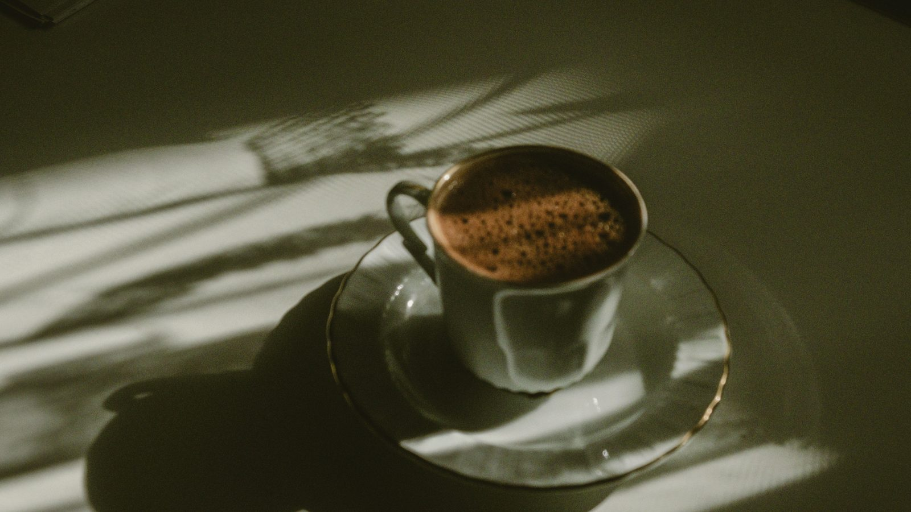
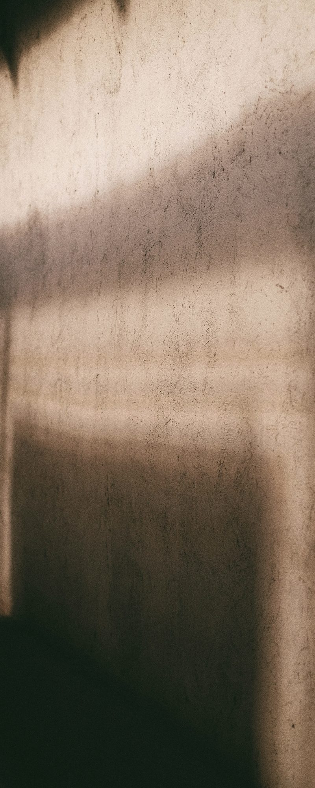
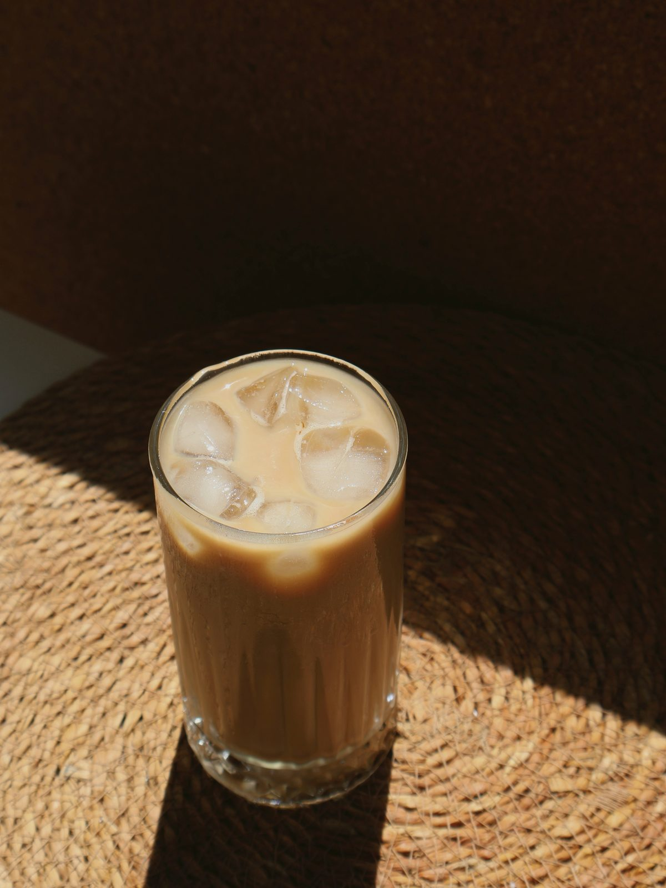
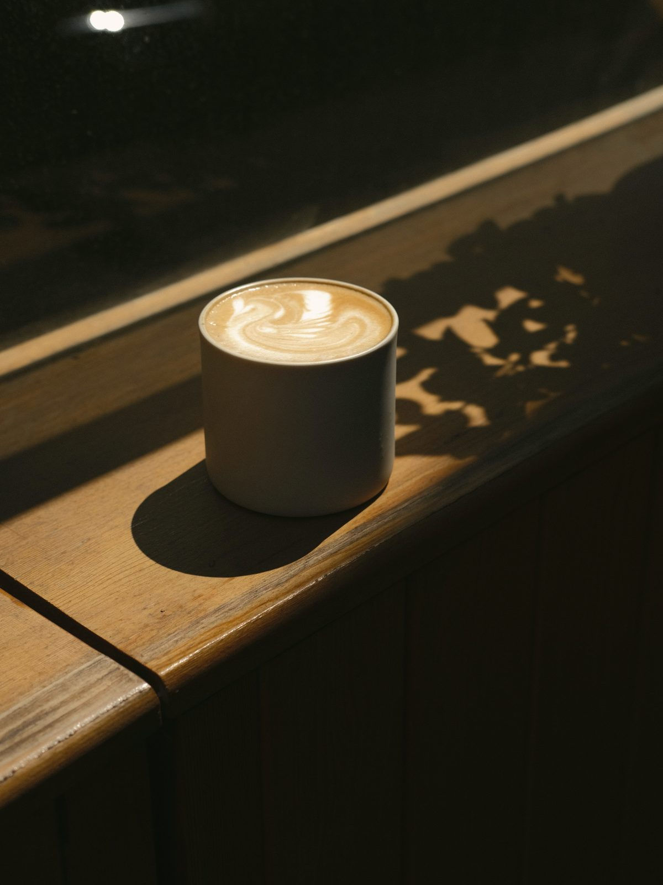
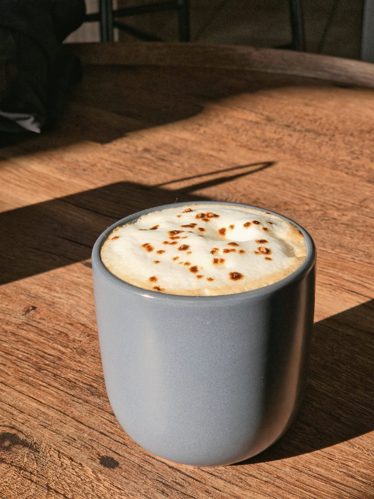
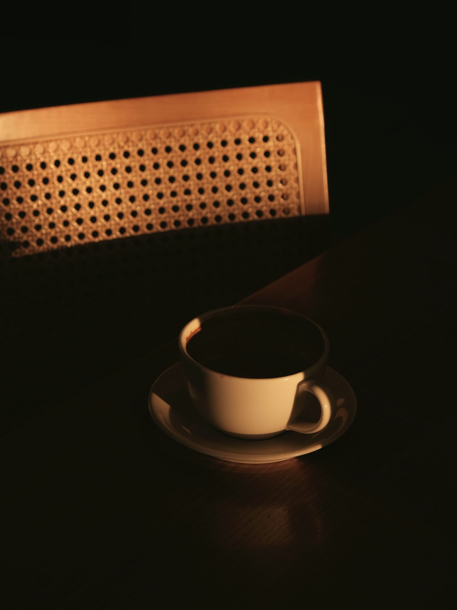
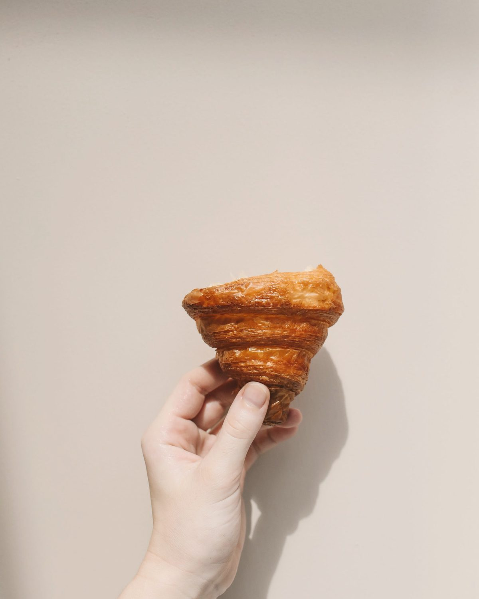
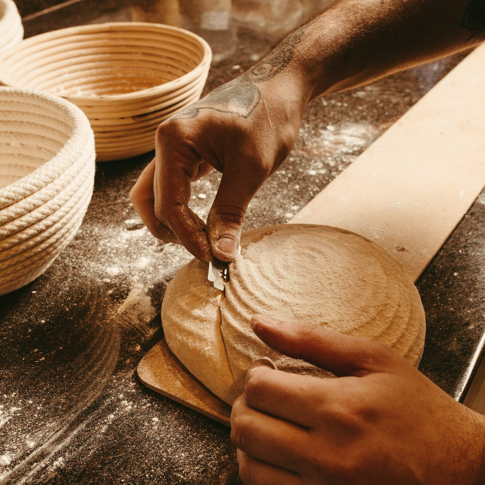
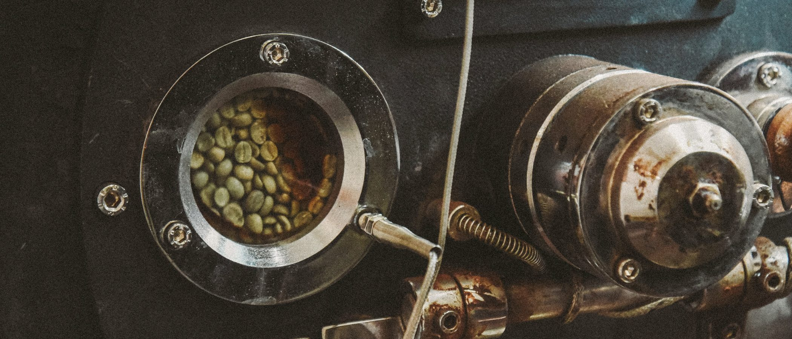
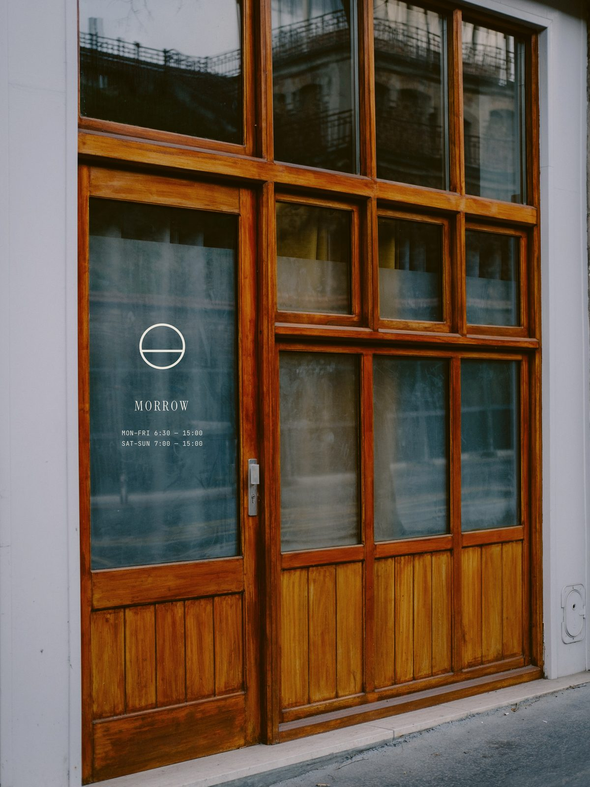

COFFEE FOR slower MORNINGS.
01 / FIRST LIGHT
A coffee bar and bakery in Raleigh, open from first light. Espresso, filter, pastries out by six.
SEE THE MENU → 412 E. HARGETT ST02 / THE IDEA

THE DAY CAN WAIT an HOUR.
Most mornings get skipped — coffee in the car, breakfast at the desk. Morrow was built for the hour before that. Good coffee, bread that came out of the oven at six, and a room that gets the first light in the neighborhood.

04 / THIS SEASON SEPT — NOV
THIS SEASON
Four drinks for the part of the year when mornings get cold before the afternoons do.
-

THIS ONE'S NEW
Sorghum Cold Brew
Cold brew, NC sorghum syrup, a little cream. Not sweet, exactly.
6.00
-

Brown Butter Latte
Browned butter syrup made here. Tastes like the edge of a cookie.
6.50
-

Fig Leaf Cortado
Fig-leaf-infused milk. Green, faintly coconut.
5.75
-

Black Cardamom Chai
House-spiced, no syrup, oat by default.
5.75
01 / 04
05 / OUT BY SIX
OUT BY six. GONE BY ten.


Croissants, morning buns, a seeded sourdough, and one thing that changes with the market. Baked here, starting at 4am. We don't hold anything back for the afternoon — when it's gone, it's gone.
06 / WHERE IT'S FROM
WHERE IT'S FROM
We buy from two importers who can tell us the name of the farm, and one roaster in Durham who tells us when we're wrong. That's the whole supply chain. Milk is from Homeland Creamery in Julian. Sorghum is from the mountains.
| ORIGIN | PRODUCER | WHAT IT TASTES LIKE |
|---|---|---|
| GUATEMALA | Finca El Injerto | cherry, cocoa |
| ETHIOPIA | Kayon Mountain | apricot, jasmine |
| COLOMBIA | Huila co-op | caramel, red apple |

TWO IMPORTERS · ONE ROASTER, DURHAM · MILK FROM HOMELAND CREAMERY, JULIAN
07 / THE ROOM
THE ROOM
Long windows, east-facing. Oak, plaster, brushed steel. Thirty-two seats and one long table for people who work better around other people.
MOST OF THIS IS WORTH sitting FOR.

08 / VISIT
VISIT
412 E. Hargett Street
Raleigh, NC 27601
| MON–FRI | 6:30 — 15:00 |
|---|---|
| SAT–SUN | 7:00 — 15:00 |
Also: we're open on Sundays. We're not open late. Both on purpose.
GET DIRECTIONS →